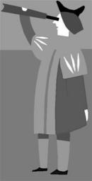
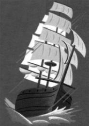
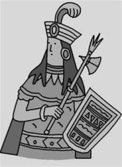
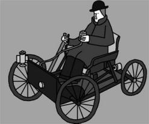

05-2017江苏，A
CHRONOLOGICA
—The Unbelievable Years that Defined History

DID YOU KNOW...
In 105 AD paper was invented in China?
When Columbus discovered the New World?
The British Museum opened in 1759?

CHRONOLOGICA is a fascinating journey through time, from the foundation of Rome to the creation of the internet. Along the way are tales of kings and queens, hot air balloons...and monkeys in space.
Travel through 100 of the most unbelievable years in world history and learn why being a Roman Emperor wasn't always as good as it sounds, how the Hundred Years' War didn't actually last for 100 years and why Spencer Perceval holds a rather unfortunate record.

CHRONOLOGICA is an informative and entertaining tour into history, beautifully illustrated and full of unbelievable facts. While CHRONOLOGICA tells the stories of famous people in history such as Thomas Edison and Alexander the Great, this book also gives an account of the lives of lesser-known individuals including the explorer Mungo Park and sculptor Gutzon Borglum.

This complete but brief historical collection is certain to entertain readers young and old, and guaranteed to present even the biggest history lover with something new!
全部题目与逐题讲解
- A.A biography.
- B.A travel guide.
- C.A history book.
- D.A science fiction.
查看答案与讲解
答案：C
1.C 推理判断题。根据开头的 “The Unbelievable Years that Defined History”并结合后文对这本书的描述,我们可以推断出这本书是一本历史书。
- A.By giving details of its collection.
- B.By introducing some of its contents.
- C.By telling stories at the beginning.
- D.By comparing it with other books.
查看答案与讲解
答案：B
2.B 细节理解题。本文的大量篇幅被用于介绍书中的历史时间、历史事件和历史人物,由此可知作者通过介绍书的内容的方式来推荐这本书,所以答案为B项。
本篇暂无未重复外刊。